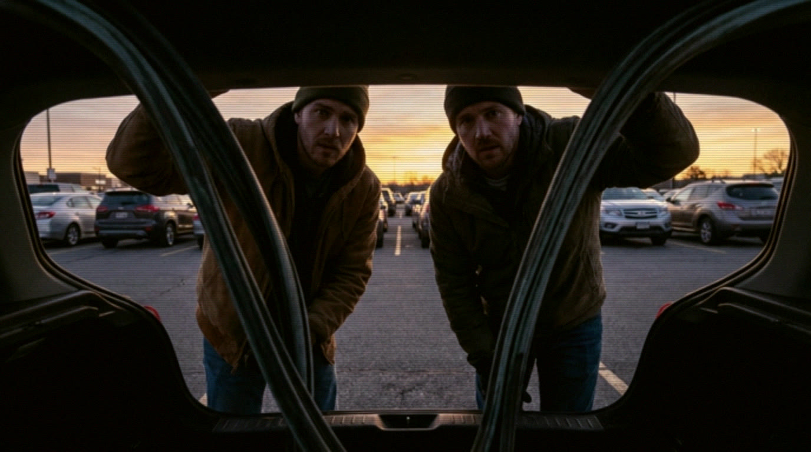
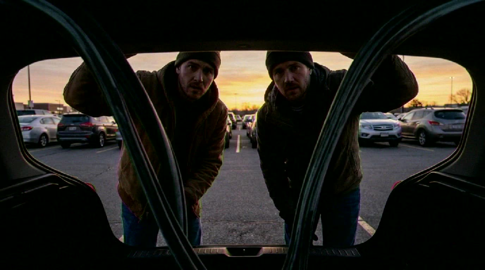
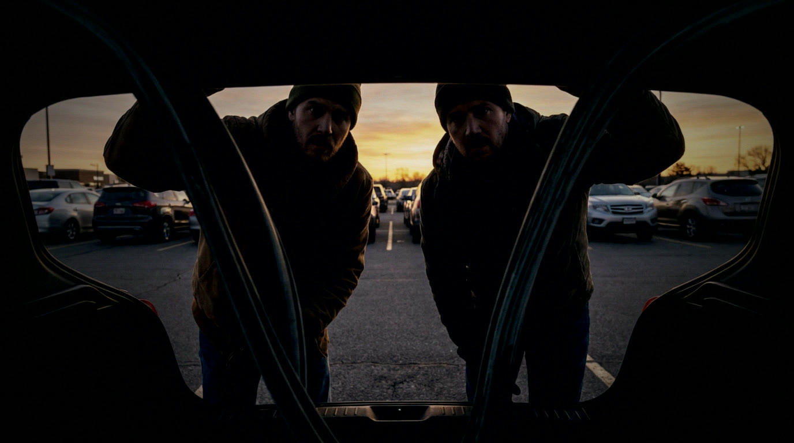
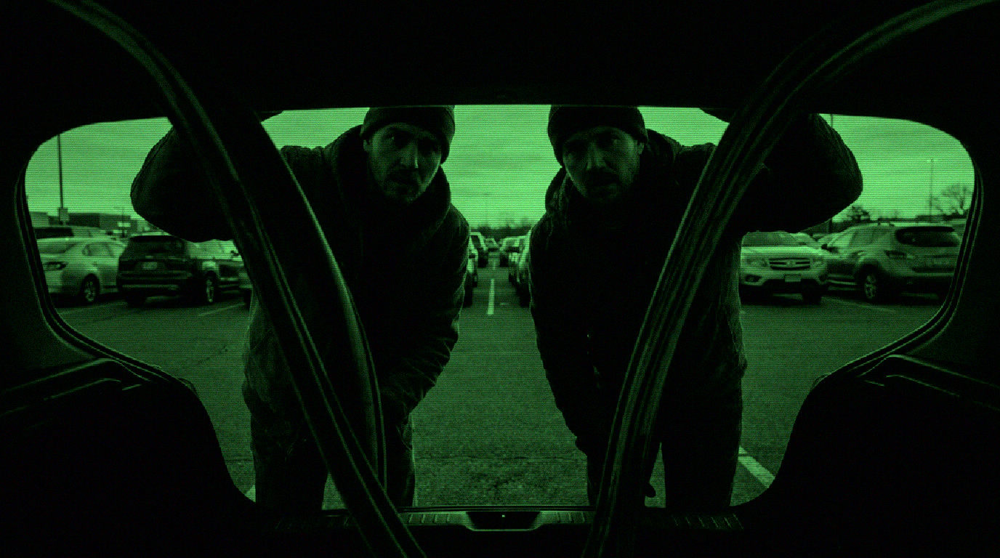

🎬 Video Project Gallery
Character reference experiments (Kling O1 → Grok I2V)
Main Video
60秒メイン動画（固定公開）
Chain Test Video
18秒チェーン実験（6秒×3、連続性テスト）
Chain Test Video (True End-Frame Seed)
18秒・真のエンドフレーム継承（A末尾→B開始、B末尾→C開始）
Balloon 18s ABC Chain
18秒チェーン（A→B→C、各6秒、ブリッジフレーム継承）
US Dark Comedy Short (3min) v2 - Ochan Script
180秒・6章構成（30秒×6）/ オチャン脚本・イベント駆動遷移 + オーディオ付き
Pet Robot CM (15s) v2
改善版15秒CM（A→B→C 各5秒、商品フォーカス強化 + オーディオ付き）
Pet Robot CM (15s)
初版15秒CM（A→B→C 各5秒、エンドフレーム継承 + オーディオ付き）
Trunk POV Opener (15s, from #03)
15秒オープナー（A→B→C 各5秒、#03静止画起点、露出調整 + オーディオ付き）
Trunk POV VHS i2v Test (12s)
12秒厳密i2v連鎖（A→B→C 各約4秒、TV-02 VHS静止画起点、イベント駆動の微細モーション + 軽いオーディオ）
Trunk Story i2v (30s)
30秒ストーリー（厳密i2v連鎖 6クリップx5秒、#03静止画起点、軽いスコア+SFX付き）
Trunk POV TV Look (stills)
#03ベース画像をTV時代風に加工（70s放送 / 80s VHS / 90s CRTニュース / 監視カメラ / テープ損傷）
01 · 1970s Broadcast TV

02 · 1980s VHS Tape

03 · 1990s CRT Late-night News

04 · Security Cam + Analog Monitor

05 · Damaged Tape / Tracking Noise

Meadow Run
Spaceship Awe
Shibuya Rain Walk
Rooftop Sunrise Dance
Repo: github.com/furoku/video-project